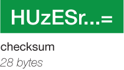

6.3.2.4. Starch (v2) specification¶
This document describes the specification for a “Starch v2”-formatted archive, which is created by the starch and starchcat utilities and extracted with the unstarch utility.
6.3.2.4.1. Archive structure¶
A Starch v2 archive is divided up into six portions:
{kind=link}
Each portion is explained below.
6.3.2.4.2. Magic bytes¶

We use four unsigned char bytes ca5cade5 to identify the file as a Starch v2 archive. BEDOPS utilities and applications which process Starch archives search for these magic bytes at the start of the file to identify it as a v2 archive.
If the file does not have these bytes, it may still be a legacy (v1, v1.2 or v1.5) Starch archive, which is identified and processed by other means not described in this document.
6.3.2.4.3. Chromosome streams¶
These variable-length data streams contain compressed, transformed BED data separated by chromosome.
Transformation is performed on BED input to remove redundancy in the coordinate data provided in the second and third columns (“start” and “stop” coordinates). Data in any additional columns are left unchanged. Transformed data are highly reduced and compressed further with open-source bzip2 or gzip libraries.
Starch v2 streams extracted with unstarch, bedops, bedmap or closest-features are uncompressed with the requisite backend compression library calls and then reverse-transformed to recover the original BED input.
6.3.2.4.4. Metadata¶
The archive metadata is made up of data, offset and hash components, each with different characteristics as described below.
6.3.2.4.4.1. Data¶
This variable-length portion of the archive is a JSON -formatted ASCII string that describes the Starch archive contents. We choose JSON as it provides a human-readable structure, allows easier extensibility for future revisions of BEDOPS and is a common format in web services, facilitating usage with web- and command-line-based bioinformatics pipelines.
The format of a typical Starch v2 JSON object is made up of two key-value pairs, one for archive and the second for streams, which we describe in greater detail below.
6.3.2.4.4.1.1. Archive¶
The archive key scheme is described below:
{
"archive": {
"type": "starch",
"customUCSCHeaders": (Boolean),
"creationTimestamp": (string),
"version": { "major": 2, "minor": 0, "revision": 0 },
"compressionFormat": (unsigned integer),
"note": (string, optional)
},
...
}
At this time, the type key will specify starch.
The customUCSCHeaders value is either true or false. If true, the --header option was provided to starch when the archive was created, and the archive may likely contain UCSC headers commonly encountered with UCSC Genome Browser data downloads. Archives created with starchcat do not support UCSC headers (i.e., this value is false in archives created with starchcat).
The creationTimestamp value is an ISO 8601 string that specifies the creation date and time of the archive. Most scripting and programming languages can parse ISO 8601-formatted date strings with little or no extra work.
The version is a triplet of integer values specifying the version of the archive. For a v2 archive, the major version will be set to 2. Major, minor and revision values need not necessarily be the identical to the version of the starch binary used to create the archive.
The compressionFormat key specifies the backend compression format used for the chromosome streams contained within the archive. We currently use 0 to specify bzip2 and 1 to specify gzip. No other backend formats are available at this time.
The note key is an optional string that can contain information if the --note="abc..." option is provided to starch when the archive is created. If this option is not specified at creation time, this key will not be present in the metadata.
6.3.2.4.4.1.2. Streams¶
The streams key scheme contains an array of objects, each describing the attributes of an individually-compressed chromosome stream, sorted on chromosome name:
{
...,
"streams": [
{
"chromosome": (string),
"filename": (string),
"size": (unsigned integer),
"uncompressedLineCount": (unsigned integer),
"nonUniqueBaseCount": (unsigned integer),
"uniqueBaseCount": (unsigned integer)
},
...
]
}
The chromosome key specifies the name of the chromosome associated with the compressed regions. For example, this might be chr1, chrX, etc.
The filename key is a string that concatenates the chromosome name, process ID and host strings (unless a unique-tag value is given to starch when creating an archive, which would replace the process ID and host values). It is a holdover from a procedure for creating legacy archives and exists for backwards-compatibility.
The size key specifies the byte-size of the compressed stream and exists for calculating offsets within the archive where a chromosome stream begins (and ends). In this way, unstarch and other Starch-capable applications can extract data only from a desired chromosome, without wasteful processing of the remainder of the archive.
The uncompressedLineCount key specifies the number of BED elements that were compressed into the chromosome stream. This is a precomputed equivalent to the result of a wc -l (line count) operation performed on BED elements that match the given chromosome, without needing to stream through the entire file.
The nonUniqueBaseCount key specifies the sum of non-unique bases across all BED elements compressed into the chromosome stream. Non-uniqueness allows multiple counting of bases in elements which overlap.
The uniqueBaseCount key specifies the sum of unique bases across all BED elements compressed into the chromosome stream. Uniqueness takes into account overlapping elements and therefore only counts bases once.
6.3.2.4.4.2. Offset¶

The metadata offset is a 20-byte long, zero-padded string that specifies the number of bytes into the file where the JSON-formatted metadata string is stored.
The unstarch utility and the newer versions of bedops and bedmap applications use this offset to jump to the correct point in the file where the metadata can be read into memory and processed into an internal data structure.
6.3.2.4.4.3. Hash¶
The metadata hash is a 28-byte long, Base64 -encoded SHA-1 hash of the bytes that make up the JSON-formatted metadata string.
This data is used to validate the integrity of the metadata: Any change to the metadata (e.g., data corruption that changes stream offset values) causes unstarch and other Starch utilities and applications to exit early with a fatal, informative error.
6.3.2.4.5. Padding¶
The remainder of the file is made up of 80 bytes of padding, which are unused at this time.